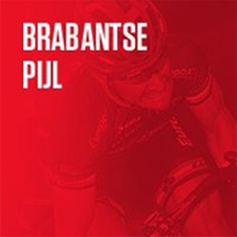

Verslag
Vandaag vierden we de feestdag van de Heilige Radboud van Leuven, en we fietsen ter ere van Hem dan ook in zijn contreien. Het peil van de deelnemers aan deze Brabantse Pijl was niet beneden alle peil, maar miste toch wat ronkende namen. Zelfs Sporza koos ervoor om voor hun commentaar mannen van de tweede garnituur te voorzien.
We krijgen al van bij het begin van deze korte klim- en kasseikoers de goede vlucht met Killy en Dissel die we nog kennen van de Scheldeprijs aangevuld metLefevre, Christophersen, Coppens en Kminek. Ze krijgen een maximale voorsprong van 3 minuten. Na een poging van Vervaeke en Oldani is het UAE die op de eerste keer Moskesstraat doortrekt. Wellens die hier zijn wederoptreden maakt lijkt in het begin sterk te volgen maar plafonneert dan plots. Vermeersch trekt door, maar als hij omkijkt, ziet hij een hele sliert achter zich. Daarna een poging van favoriet Schmid op de Holstheide zonder resultaat. De tweede keer Moskesstraat is het wel prijs, want daar gooit Gregoire alle registers open, alleen Ramses Debruyne kan hem volgen, sterk van de Alpecin renner. Ze rijden met hen twee weg, maar op de Holstheide springt Cosnefroy er alleen naartoe. Het peloton is ontregeld en een groepje van drie kan de aansluiting nog maken met Del Grosso, Lanhove en Charmig. Johannink van de rockets kan de aansluiting nog maken, maar door het tempo van Lanhove op de Moskes, moet hij de rol weer lossen. Het blijft spannend, want de voorsprong is niet meer dan een luttele 15 seconden, maar in de S bocht komt het peloton aansluiten. Renners komen nu van alle kanten om de sprint in te zetten. Het is de onbekende Deen Foldager die hier een echte voldragen overwinnning boekt, voor Hermans en Cosnefroy. Zo blijft de Brabantse Pijl toch voor verrassende winnaars zorgen zoals Godon, Sheffield en Rosseler. Het is eens wat Anders…
In megabike was het spannend voor de dagzege Jan Lewylle wint met 5 punten voorsprong op Jordi Dupont en Milan Pottier (Flandriens van den Aldi) wordt 3de. Proficiat Jan!
In de tussenstand krijgen we dezelfde top 3, maar in een andere volgorde. Liesbeth Christiaens komt nu op kop, voor Xavier Pottier & Dominique Neels.
Uitslagen, Tussenstand & optimale ploeg kan je vinden onder het verslag op de website: https://jolly-bohr-326994.netlify.app/
Wil je nog meer statistieken dan kan je verder zoeken via het menu statistieken.
Sportieve groeten,
Stijn, Arnout & Fred